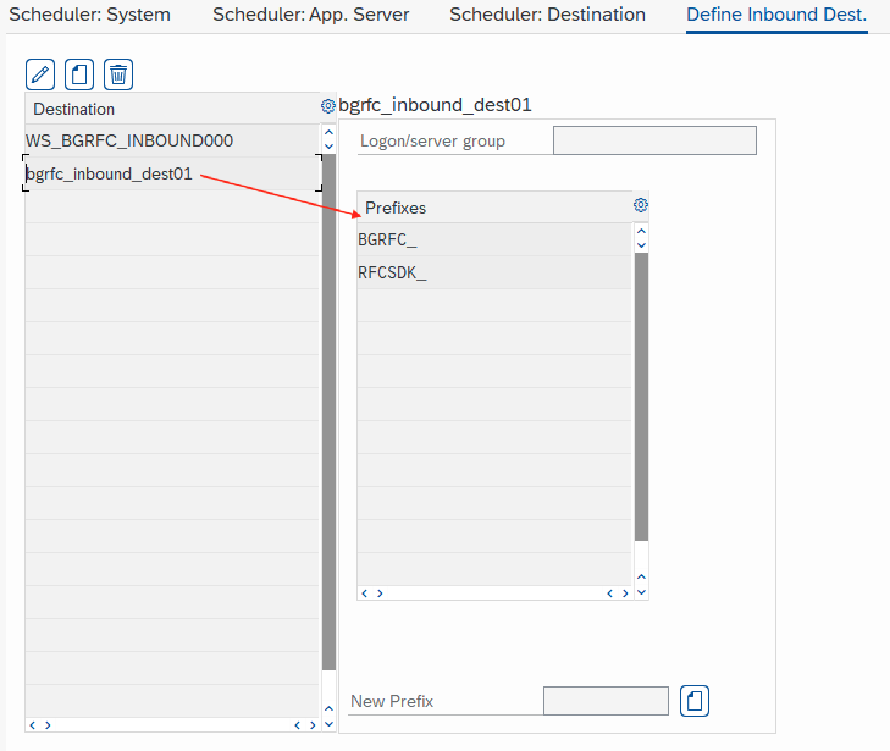
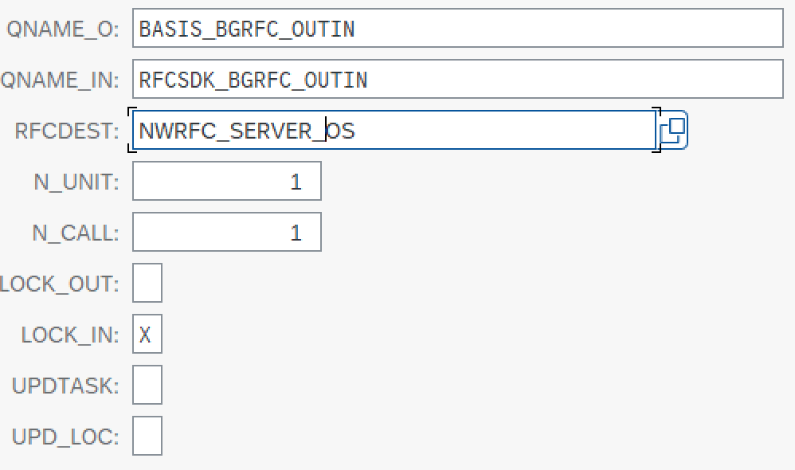

Server scenario¶
In Server scenario, ABAP system is calling Python remote enabled RFC server, to consume Python functionality. Python functionality must be exposed like an ABAP function module and Python server shall provide input / output parameters just like ABAP function module.
To streamline that process, the real ABAP function module is used as a “blueprint” and Python server will create exactly such ABAP interface to expose Python functionality.
When Python server function “ABC” for example is registered on Python server, the name of ABAP “blueprint” function module is given, where the input/output parameters definition shall be taken from. Let use ABAP function module “XYZ” for this example. The Python server will fetch ABAP function module “XYZ” definition and expose Python function using ABAP function module input/output parameters. The ABAP logic of “XYZ” is here irrelevant, the function module can be empty. Already existing or new ABAP function module can be used to define Python function interface.
Python RFC server shall run in separate thread, created automatically by PyRFC, or created by Python application.
Server in thread created by PyRFC¶
Server running in new thread created by PyRFC is started using start() method:
# create server
server = Server({"dest": "gateway"}, {"dest": "MME"}, {"port": 8081, "server_log": False})
# expose python function my_stfc_structure as ABAP function STFC_STRUCTURE, to be called by ABAP system
server.add_function("STFC_STRUCTURE", my_stfc_structure)
# start server
server.start()
and can be stopped using stop() method:
# stop server
server.stop()
Example: server_pyrfc_thread.py
Server in thread created by application¶
Here the PyRFC server is registered for ABAP system gateway and Python function
my_stfc_connection is exposed input/output parameters like ABAP function module STFC_CONNECTION.
def my_stfc_connection(request_context=None, REQUTEXT=""):
"""Server function my_stfc_connection with the signature of ABAP function module STFC_CONNECTION."""
print("stfc connection invoked")
print("request_context", request_context)
print(f"REQUTEXT: {REQUTEXT}")
return {
"ECHOTEXT": REQUTEXT,
"RESPTEXT": "Python server here",
Server is created and started in Python function launch_server() and this function is invoked in new thread started by application:
def launch_server():
"""Start server."""
# create server for ABAP system ABC
server = Server(
{"dest": "gateway"},
{"dest": "MME"},
{
"port": 8081,
"server_log": False,
},
)
print(server.get_server_attributes())
# expose python function my_stfc_connection as ABAP function STFC_CONNECTION, to be called by ABAP system
server.add_function(
"STFC_CONNECTION",
my_stfc_connection,
)
# start server
server.serve()
# get server attributes
print(server.get_server_attributes())
server_thread = Thread(target=launch_server)
and stopped by application:
# stop server
server_thread.join()
Example: server_app_thread.py
Source code of ABAP test reports, calling RFC function modules exposed by Python server: z_stfc_connection_call.abap and z_stfc_structure_call.abap
Background RFC (bgRFC) Server¶
Configuration¶
Configure RFC destination using SM59 transaction
TCP/IP Connection
NWRFC_SERVER_OSSpecial Options > Select Protocol: basXML serializer
basXML serializer shall be configured for RFC server destination in SM59 transaction

Configure bgRFC queues using SBGRFCCONF transaction
Scheduler app server and destination

Scheduler destination

Configure inbound destination prefixes for bgRFC queues’ names. Other queue names are processed as standard RFC queues.
{kind=link}
bgRFC Client¶
To test sending bgRFC queue to ABAP system, you can try the example bgrfc_client.py , adapted to your system,
python examples/server/bgrfc_client.py MME
from pyrfc import Connection
client = Connection(dest=sys.argv[1])
unit = client.initialize_unit()
name = "BGRFC_TEST_OUTIN"
counter = "00001"
client.fill_and_submit_unit(
unit,
[("STFC_WRITE_TO_TCPIC", {"TCPICDAT": [f"{name:20}{counter:20}{unit['id']:32}"]})],
queue_names=["RFCSDK_QUEUE_IN"],
attributes={"lock": 1},
)
Check bgRFC queue status using SBGRFCMON - bgRFC Monitor transaction
Deleting the unit lock will release the unit for immediate execution


bgRFC Server¶
For bgRFC server configuration and implementation, first check the section 5.6 Queued and Background RFC Server of
SAP NWRFC SDK 7.50 Programming Guide
In addition to standard server, the bgRFC server requires the implementation of bgRFC event handlers, as per example bgrfc_server.py Event handlers shall be registered before server has started:
# create server
server = Server(*BACKEND[backend_dest])
print(server.get_server_attributes())
try:
# expose python function stfc_write_to_tcpic as ABAP function STFC_WRITE_TO_TCPIC, to be called by ABAP system
server.add_function("STFC_WRITE_TO_TCPIC", stfc_write_to_tcpic)
# register bgRFC handlers
server.bgrfc_init(
backend_dest,
{
"check": onCheckFunction,
"commit": onCommitFunction,
"rollback": onRollbackFunction,
"confirm": onConfirmFunction,
"getState": onGetStateFunction,
},
)
# start server
server.start()
input("Press Enter key to stop server...\n") # WPS110
# stop server and database
server.stop()
finally:
# clean-up the server
server.close()
To test, first start the Python server
python examples/server/bgrfc_server.py ALX
[2023-03-28 12:16:13.215013 UTC] Server connection '5175819264'
{'serverName': '', 'protocolType': 'multi count', 'registrationCount': 0, 'state': 'RFC_SERVER_INITIAL', 'currentBusyCount': 0, 'peakBusyCount': 0}
[2023-03-28 12:16:13.577820 UTC] Server function installed 'STFC_WRITE_TO_TCPIC'
[2023-03-28 12:16:13.578015 UTC] Server function installed '{'func_desc_handle': 5166353136, 'callback': <function stfc_write_to_tcpic at 0x1007f2020>, 'server': <pyrfc._cyrfc.Server object at 0x1008b81d0>}'
[2023-03-28 12:16:13.645304 UTC] Server 'launched 5175819264'
Press Enter key to stop server...
Then run ABAP test report z_nwrfc_server_bgrfc.abap to create outbound bgRFC queue in ABAP system
After pressing the Execute button, the server log in Python system shell continues with
bgRFC:onCheck handle 5175859712 tid FA163E82B1991EDDB3AC6EB2628DE0F1 status created
[2023-03-28 12:24:27.128859 UTC] metadataLookup 'Function 'STFC_WRITE_TO_TCPIC' handle 5166353136.'
[2023-03-28 12:24:27.130577 UTC] genericHandler 'User 'BOSKOVIC' from system 'ALX', client '000', host 'vmw6265.wdf.sap.corp' invokes 'STFC_WRITE_TO_TCPIC''
[2023-03-28 12:24:27.130621 UTC] authorization check for 'STFC_WRITE_TO_TCPIC' '{'call_type': <UnitCallType.background_unit: 3>, 'is_stateful': False, 'unit_identifier': {'queued': True, 'id': 'FA163E82B1991EDDB3AC6EB2628DE0F1'}, 'unit_attributes': {'kernel_trace': False, 'sat_trace': False, 'unit_history': False, 'lock': True, 'no_commit_check': False, 'user': 'BOSKOVIC', 'client': '000', 't_code': 'SE38', 'program': 'Z_NWRFC_SERVER_BGRFC', 'hostname': 'ldai1alx_ALX_18', 'sending_date': '20230328', 'sending_time': '122427'}}'
server function: stfc_write_to_tcpic tid: FA163E82B1991EDDB3AC6EB2628DE0F1 call: 0 {'call_type': <UnitCallType.background_unit: 3>, 'is_stateful': False, 'unit_identifier': {'queued': True, 'id': 'FA163E82B1991EDDB3AC6EB2628DE0F1'}, 'unit_attributes': {'kernel_trace': False, 'sat_trace': False, 'unit_history': False, 'lock': True, 'no_commit_check': False, 'user': 'BOSKOVIC', 'client': '000', 't_code': 'SE38', 'program': 'Z_NWRFC_SERVER_BGRFC', 'hostname': 'ldai1alx_ALX_18', 'sending_date': '20230328', 'sending_time': '122427'}}
TCPICDAT: [{'LINE': 'BASIS_BGRFC_OUTIN 00001 12345678901234567890123456789012'}]
bgRFC:onCommit handle 5175859712 unit {'queued': True, 'id': 'FA163E82B1991EDDB3AC6EB2628DE0F1'}
bgRFC:onConfirm handle 5175859712 unit {'queued': True, 'id': 'FA163E82B1991EDDB3AC6EB2628DE0F1'}
After pressing Enter button in Python system shell, recorded events are shown, recorded in tlog.log
2023-03-28 12:24:27.127087 FA163E82B1991EDDB3AC6EB2628DE0F1 created
2023-03-28 12:24:27.130816 FA163E82B1991EDDB3AC6EB2628DE0F1 executed stfc_write_to_tcpic
2023-03-28 12:24:27.132676 FA163E82B1991EDDB3AC6EB2628DE0F1 committed
2023-03-28 12:24:27.224103 FA163E82B1991EDDB3AC6EB2628DE0F1 confirmed
Unit status management and log example is provided in TLog class in tlog.py script
and can be tested like:
python examples/server/tlog.py
True
{'utc': '2023-03-28 12:32:35.064000', 'tid': '60819ABA77594C698E98D552951A8A3B', 'status': 'executed', 'note': 'python_function_module'}
6
2023-03-28 12:24:27.127087 FA163E82B1991EDDB3AC6EB2628DE0F1 created
2023-03-28 12:24:27.130816 FA163E82B1991EDDB3AC6EB2628DE0F1 executed stfc_write_to_tcpic
2023-03-28 12:24:27.132676 FA163E82B1991EDDB3AC6EB2628DE0F1 committed
2023-03-28 12:24:27.224103 FA163E82B1991EDDB3AC6EB2628DE0F1 confirmed
2023-03-28 12:31:38.743892 41C5E22EB6D345EDBA8D8FBCD9F3EDE9 created
2023-03-28 12:31:38.744026 41C5E22EB6D345EDBA8D8FBCD9F3EDE9 executed python_function_module